Overview
Nimbus is a cloud storage application which provides users a way to seamlessly create, collaborate, and store their projects. Its core value is to give users all the tools necessary to create inspiring work.
Problem and Solution
Current cloud storage products on the market talk about wanting to assist users create but most often the price of their subscriptions hinder creators. This is where Nimbus steps up and lives up to its values. Nimbus’ supply users the tools to assist in creation and collaboration without having to purchase expensive plans to access these tools. Here are the main issues users have with current products
59%
Privacy concerns
36%
Price frustration
User Research
Who are the Users?
86% of particpants either work full or part time. A combined 93% of participants have either a Bachelors degree, Graduates degree, or have some college experience. When asked who would the participants collaborate with, 93% responded with school mates and 79% responded with co-workers.
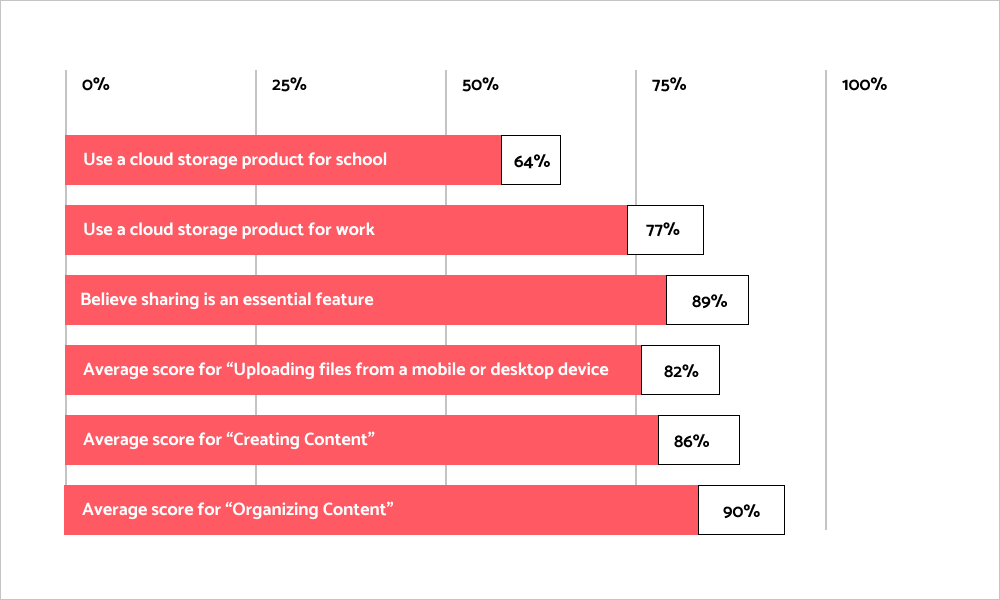
Audience
Surveys revealed that student and organizations who collaborate regularly will be the target audience.
A deeper dive into the demographics support this as 86% of participants either work full or part time. And a combined 93% of participants having either a Bachelors or Graduate degree, or have some college experience.
Finally, when asked who would the participants collaborate with, 93% responded with school mates and 79% responeded with co-workers.
64%
of participants use a cloud storage product for school
77%
of participants use a cloud storage product for work
Features
The survey also revealed what features the product should contain as I had each participant rate features the client wanted included. Below are the average scores for each feature.
89%
believe sharing is essential
4.2/5
“Uploading files from device”
4.3/5
"Creating Content”
4.5/5
“Organizing Content”
Competitive Analysis
After performing a SWOT analysis I was able to identify the key opprotunity. The solution is to live up to values that encourages individuals to create amazing projects.
Just like the survey, the competitive analysis confirms that the prices of subscriptions are the main issue. By utilizing the “Freeium” model, which is a pricing strategy where a product and all its features are free of charge; allows the user to switch and use Nimbus without feeling the pressure to purchase subscriptions. Thus encouraging users to use the product frequently.
User Personas
Julia
22 years old Graduate Student
“Sharing my thought process is a part of how I work”
Goals
- Collaborate with her peers in a safe and secure space
- Share her projects to her social media profiles
- View what work has been done in projects and by whom
Frustrations
- Not being able to organize her projects appropriately
- Cloud storage apps either lack the tools needed for her work or are too expensive for a college student
Eduardo
25 year old Project Manager
“My impact on the team and project is important”
Goals
- To use a tool that he and his team can use that can create different files for different platforms
- Be able to have access to his files from multiple devices without limitations
- Organizing files by folder name
Frustrations
- Due to working in a tech company with sensitive information, he lacks confidence that these files are properly protected by the tools they are currently using.
Information Architecture
Once the data has been analyzed and the personas have been created, I utilized the Pareto Principle to create high priority user stories. Meaning that 80% of the product’s users, use 20% of the features. These stories were translated into user flows to best show how the user would execute each task. Both artifacts ensure that the project stays within a consistent scope.
As a user, I want to make an account
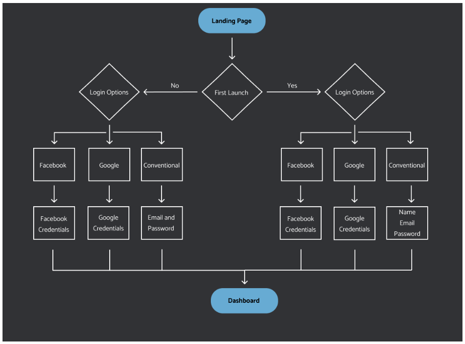As a user, I want to create content
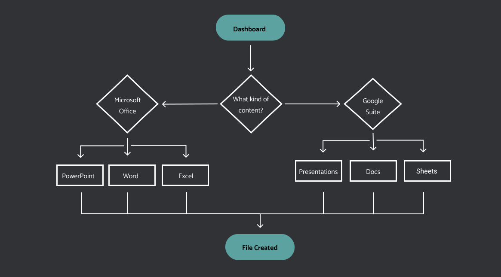As a user, I want to share my project
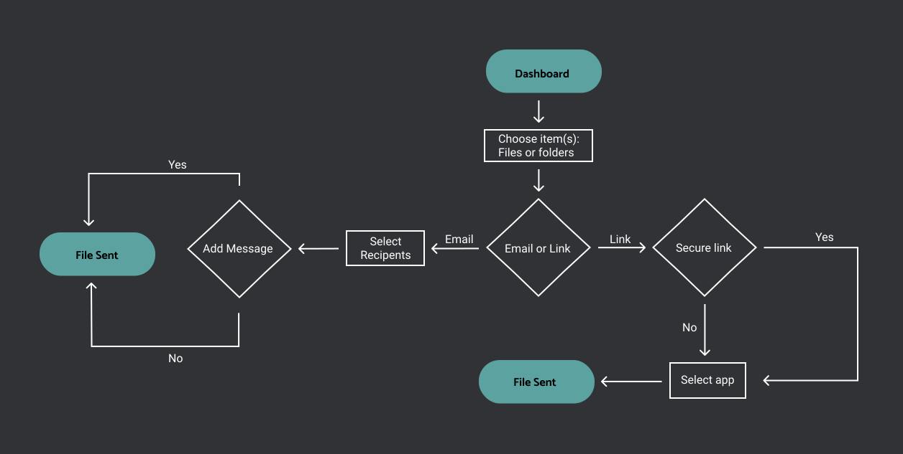As a user, I want to organize my file
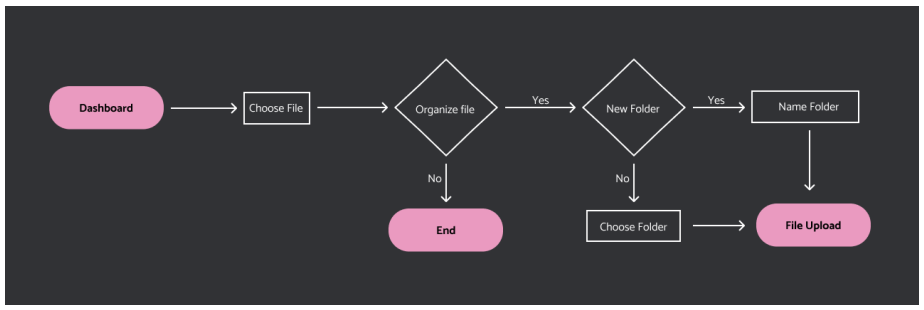As a user, I want to upload a file from my computer or desktop
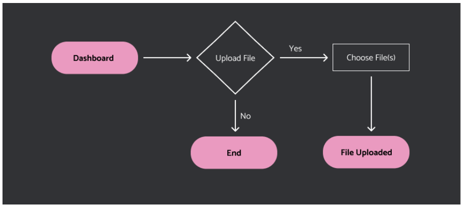Wireframe Sketches
With a clear focus and solid foundation, I began about sketching how the pages can possibly look like. This allowed for rapid iteration.
Mobile Wireframes
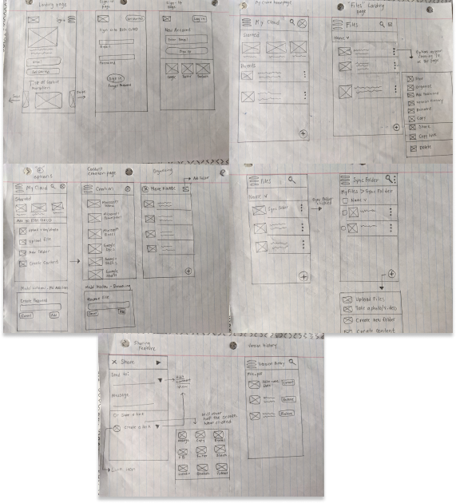
Desktop Wireframes
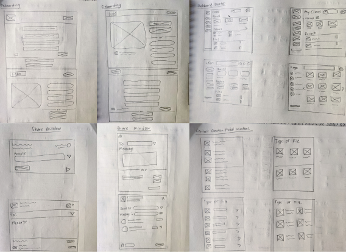
Low Fidelity Wireframes
Testing
Once the low fidelity wireframes were completed, I conducted a usability test on 3 individuals. The tasks that were tested were signing up for an account, adding content, and organizing content.
Before
After
Results
Testing metrics indicate a positive outlook on the functionality of the application. Each participant was able to complete the task with little to no errors. The average task time per assignment is 7.7 seconds. In addition, participants rated each task highly with the lowest average being a 4.3 out 5 for organizing content.
Structure
Other than testing metrics, user comments indicate they are familar with the structure of the app. With words like “similar” “straight forward” and “understandable” being used when asked about their opinion of the layout of the app.
Language
The main issue that users had when asked about their experience was the language used. 'Sign In' and 'Sign Up' looked similar at a glance. And in the homepage, words like 'Home', and 'Files' were vague and could have used more contrast.
Visual Design
Logo
The goal for the the design of the logo is independence. I wanted a logo where the icon and wordmark are able to stand on their own without the other. This allows for versitlity in ways to use the design.
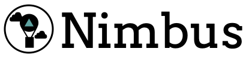
Sketches
Color Palette
Vibrant colors represent a creative and inclusive environment. In contrast with the darker tones brings in a feeling of sophistication and empowerment.
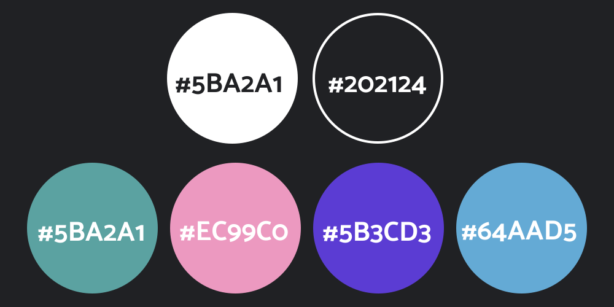Typography
Arvo Regular, Roboto Bold, and Roboto Regular is meant to be modern, clean, and professional. When combined it makes the content easy to read and pleasant on the eyes.
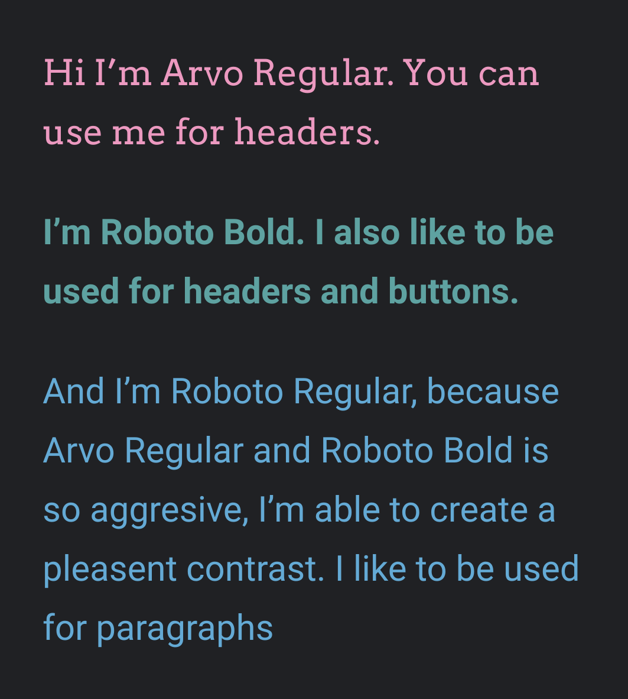High Fidelity
High fidelity mockups were constructed based on the research, information architecture, and visual design. The key concepts of Nimbus were composed to create an efficient user experience.
Conclusion
From ideation to completion, Nimbus has undergone many different changes. I was able to take an indefinite idea without a target audience, product name or brand, or even a problem and ended with a well-defined solution. Nimbus offers an alternative to other cloud storage apps by taking the main issue users have with the competition and directly addressing that.
Reflection
With the benefit of hindsight, I would have allocated more time into developing features that I believe would have separated Nimbus from the competition. User surveys indicated a smaller but third target audience. A target audience that uses cloud storage services for personal uses.
Developing features for this target audience would have required more time allocated to research and figure out what their hobbies are and how it relates to their usage of cloud storage apps. However, due to the time constraint, I decided to focus on the more prominent target audience.
To create a competitive product it is necessary to perform great research. I would have loved to spend more time interviewing and picking the brain of this third audience.